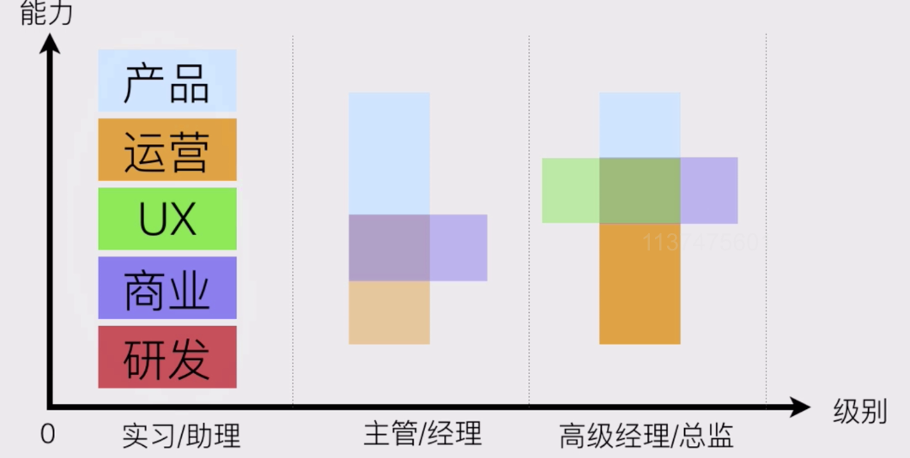
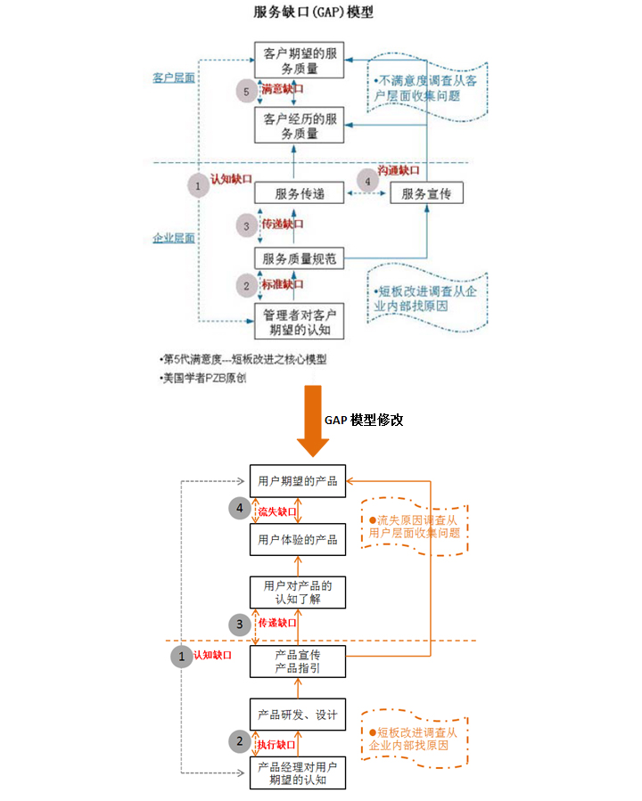

产品经理的视角
一、几个基础的产品视角方法论
A.什么是产品经理
1.产品经理面临的挑战
- 1）前端产品需求萎缩：开源框架、UX能力提升，快速迭代的思路
- 2）后端产品成就感弱：很难被证明，很少成就感
- 3）垂直能力不足：什么都懂一些，但业务不够精？
- 4）对逻辑的要求提高：蓝海看增长，红海看效率
2.产品经理的职业发展

3.产品经理的能力


4.总结
- 1）入门容易入行难
- 2）改变世界前不如先改变自己
- 3）从横向到纵向的发展
- 4）提升逻辑能力很重要
B.产品经理成长途径
1.产品经理成长途径

C.产品经理如何学
1.产品经理的学习模型

2.学习路径的总结

D.产品经理能力模型
1.腾讯产品经理能力模型

2.百度产品经理能力模型

E.用产品画布思考问题
1.以用户为中心的产品设计
- 1）人人都是产品经理？你自己是产品的深度用户吗？
- 2）安全必须第一吗？不要为了1%的可能，去影响99%的用户
- 3）要数量还是要活跃？质量比数量更重要，对活跃用户的关注远大于对新增用户
- 4）长期还是短期？关注产品的长期发展而非短期利益（产品、运营、销售、KPI）
- 5）你害怕离职吗？拼死维护用户的利益，有一个老子大不了不干了的精神
2.用产品画布思考问题
- 1）产品分析画布

F.用数据化指导产品优化
1.理性vs感性：
- 凡是需求，必有数据统计项，凡是改进，必有数据对比
- 用数据来保证稳定产出，数据来做迭代的依据
2.数据能帮我们做什么
- 用户分析：用数据给用户分层，指导用户分析等
- 需求优先级：数据能确定影响面，帮助确定优先级
- 评估上线效果：上线前后数据对比来评估迭代效果
3.现在功能有什么问题？
- 现象：哪些用户出了什么问题？
- 原因：为什么会出问题呢？
- 影响面：出现问题的频率和受影响的用户量是如何的？
4.数据非常重要
- 评估效果：如何说明策略效果好？
- 提供依据：如何说服boss做你的项目？
- 直观可视化：直观展示，有说服力
二、培养产品视角
A.产品生命周期
1.产品生命周期
- 1）任何事情、任何物体都有生命周期，如雅虎
- 2）如何理解拔苗助长？
- 3）互联网产品有没有拔苗助长的现象？
2.互联网产品的生命周期

3.如何判别我的产品属于哪个周期？
- 1）首先看活跃用户量趋势，平衡、向上拉伸还是往下掉？
- 2）其次看时间段，一般18个月后，产品都会进入成长期
- 3）探索期越短越好，成长期长一点好，成熟期越长越好
- 4）提醒：看活跃用户量时，尽可能分享外部推广带来的“增肥效应”
B.产品视角看产品
1.认识产品
- 1）系列化：单点突破，延伸同类，以点带面
- 2）深度体验：多次重复认真完成主流用户的任务

- 同一动作，重复十遍以上
- 关键功能上限：有哪些限制，为什么会有这些限制？
- 作弊空间：有哪些空子可以钻？钻空子的复杂程度
- 特别的玩法：有哪些意想不到的玩法？为什么会出来这个？
- 直接竞品：看优缺点与差距
- 相关功能：看功能模块在大平台中的意义和表现
- 3）追踪式体验：跟踪任务效果、跟踪版本
- 持续体验：不能只做一次，要持续跟进
- 关注中长期结果：体验是短暂的，结果是长期的
需求挖掘方法论
一、需求挖掘、用户分析
A.通过用户反馈发现问题
1.通过用户反馈关注什么？
- 1）自身产品的问题
- 2）竞品的问题
- 3）可能的机会点
2.通过哪些渠道来收集用户的反馈


3.用户反馈不同渠道的处理策略

B.应用商店的评论与反馈
1.主流应用商店与常用工具

2.监控应用商店监控什么？
- 1）低分差评：重点看低分1-3分
- 2）有效评论：重点看有实际描述的评论
- 3）异常行为：比如水军刷榜、恶意评价
- 4）竞品变化 ：监控竞争对手的应用变化
3.微博贴吧与用户反馈

4.通过用户咨询、投诉发现问题

5.通过用户点评发现问题
- 1）差评：为什么差评？原因、现象是什么？
- 2）描述：重点看有实际描述的评论
- 3）异常行为：比如是否有刷好评的行为？有没恶意评价行为？
C.老用户调研怎么做
1.用户调研全过程

2.明确的背景和目的
- 1）背景：什么情况下发起的调研？是否必须用调研来解决？
- 2）目的：通过用户调研希望得到的结果是什么？

3.选择目标用户
- 1）典型用户：通过简单的用户画像，找出典型用户
- 2）目标用户：时间、地点、配合程度
- 3）邀约用户：直接说明目的，并告知可能发生的情况
- 4）用户数量：不宜扫网式，一般5-10个
4.猜测用户问题，设定题目
- 1）用户可能的问题：用户的使用行为表现
- 2）可能的解决方案：猜测解决用户问题的手段
- 3）确定访问提纲：聚焦且开放的问题
- 4）题目数量：线上10-20道，线下5-10道
5.怎么问问题

6.调研、访谈
- 1）了解用户使用过程：最好观察用户行为
- 2）提问：对关键行为、预设问题进行提问
- 3）反馈：对有效的信息反馈给用户，并深究
7.用户调研总结
- 1）单个用户：记录单用户的调研情况
- 2）整体情况：汇总用户调研的过程和结论
- 3）行动计划：分享并提出行动计划
**扩展：用户流失原因调研方法
- 1）了解调研目的
- 防止用户流失：用户为什么会流失？（用户流失原因）→用户会继续流失吗？（现有用户的不满意点与流失原因是否一致？）→如何防止用户流失？（应采取什么样的改善措施）
- 挽回流失用户：用户为什么会流失？（用户流失原因）→流失用户回流的可能性？→什么情况下他们愿意回来？（回流触点）→如何挽回流失用户？（应采取什么样的改善措施）
- 2）找出用户流失的真正原因
- 深入追问——5个WHY
- 侧面对比相关产品
- 行为分析
- 3）解答两大最终目的其他问题
- 用户会继续流失吗？——了解现有用户与流失用户的差异，需要了解现有用户的态度，现有用户不满意的方面是什么，如果现有用户不满意方面与流失用户流失原因一致，那证明现有用户和流失用户没明显差异，如果导致用户流失的问题没解决，用户会继续流失。
- 用户什么情况下才愿意回来：首先要知道流失用户回流的可能性，如果大部分用户表示无论产品怎样改变也不会再尝试使用，那在挽留用户上投放更多资源也没作用；其次是了解用户在什么情况下愿意回来，这包括但不限于流失原因改善，除了流失原因改善外还需要相关的促销活动，需要询问流失用户进行了解；最后是确认进行挽回改善措施会不会引起现有用户的不满，要了解现有用户满意及不满意的方面，确保挽回流失用户的措施不会对现有用户产生影响。
- 4）设计改善措施-参考GAP模型

- 认知缺口：产品经理不知道用户想要的是什么。若出现了认知缺口，则首先是让产品经理清楚知道用户流失的真正原因。
- 执行缺口：产品经理知道用户想要什么，但实际做出来的产品与设计中的不一致。若出现了执行缺口，则要了解具体哪个执行步骤出现问题，是资源的欠缺还是技术难以实现。
- 传递缺口：产品的宣传和指引不能让用户对产品真正认知了解若出现了传递缺口，则要了解用户现在的感知是怎么样的，在哪些宣传和指引上出现了问题。
- 流失缺口：用户体验到的产品和期望的不一样。
**如何去做用户访谈和用户调研
D.用户调研的误区
1.为了调研而调研
2.直接问用户有什么需求
3.试图说服用户
4.求全求量
5.依赖调查问卷
**拓展：如何做一次完美的用户调研
1.为用户归类，选择典型的代表
- 我们在调研的时候经常会说”向对的人问对的事情”，这句话的意思是:调研不同的用户群体获得不一样的需求

2.设定目标，使问题更聚焦
- 用户调研在产品的生命周期中不同的阶段有着不同的使命。产品初期我们可以根据调研结果获得不同的用户需求为系统建设提供依据，产品上线之后我们可以收集用户的反馈改进功能的业务流程或用户体验。
- 无论你是想获得用户的观点和行为、验证假设或者是量化结果，都必须在进行调研之前明确本次调研的目标是什么，任何无意义的漫谈或问卷调查都是低效且具有干扰性的。
- 永远不要让客户告诉你系统怎么做，正确的做法是通过用户对业务的描述以及使用的习惯对系统进行架构或改进，所以调研的过程中必须设立达成的目标，再围绕这个目标进行展开。

3.明确调研的形式
- 在产品的不同时期选择适当的方法，这里适当的意思是指适合产品规模、同时也适合公司规模的，例如很多中小型公司根本没有必要使用眼动实验或进行可用性测试

4.安排问题的顺序
- 想要高效地在访谈中获得最有价值的信息，可以使用”问题组”的方法，循序渐进得切入被访谈者的真实想法。具体来说可以使用金字塔结构、漏斗结构和菱形结构来组织问题组
- 采用金字塔结构构成问题组，是一种归纳的过程。使用这种形式时，调研者会提出非常具体的问题，通常是以封闭式的问题(提供多个选项，与选择题相似)开始，然后使用半开放式的问题，并且鼓励被调研者用更通用的回答来对问题进行拓展。如果你认为被调研者还不在状态需要对这个话题进行预热时，就应该采用金字塔结构。当你想结束问题时，同样也可以使用金字塔结构组织问题的顺序。

- 漏斗结构实际上是一个演绎过程，也就是我们经常说的把问题逐步聚焦。它通常以通用，开放式的问题开始，然后用封闭式的问题缩小可能的回答。漏斗结构能够为开场提供一种容易且轻松的途径，当被调研者对这个话题有情绪波动时就要适当控制使用问题的顺序并根据被调研者的回答决定问题的深入程度。

- 菱形结构实际上就是上面两种结构的组合，这种方式通常以一个非常明确的问题开始然后过渡到通用型问题，最后再根据一个结论进行深入。调研者首先会提出一些简单的，封闭式的问题，为调研做铺垫。随着问题的逐步展开，向被调研者提出明显没有”通用”答案的问题。然后根据回答，调研者再次限制区域深入某一个问题以得到明确的答复，这样就完成了一组完整的问题。

5.要研究用户的行为，更要研究用户的想法
- 如果把用户需求比作一条污水河，那么我们通过调研得到的往往是河流下游的东西，即”看得见的需求”。通常是一些困扰用户的问题、用户自己能设想到的功能等。但河流中的污水总是源源不断的，我们必须想办法找到源头，即获得”未意识到的需求”以及”看不见的需求”。
- 看不见的需求是指产品人员对业务的深入理解以及用户的心理去构想出用户没法想象到的解决方案。所以在调研后需要归纳总结并且大胆地提出设想，再不断去进行实践与验证。
- 用户调研可以获得不同用户不同的想法，但做产品一定不是追求满足所有人的需求，产品有自己的特性和定位。产品经理一定要平衡好产品定位与用户需求之间的关系，在符合用户习惯的角度下，有侧重性的突出产品的特性并且让更多的用户接受，创造更大的价值。
E.一个真实用户调研
1.一个真实的用户调研
**用户调研之言行不一
1.用户说的和做的可能完全不一样，因为他们很多时候意识不到自己行为的真相，所以需要我们对他们的所说的、所做的两个方面有清楚的认识。
2.在心理学发展的早期，有一个未经验证的假设，即一个人的态度与行为之间是一致的。这个假设也可以解读成一个人对某对象（人或事物）的态度将会影响其对待该对象的行为。因此，心理学家和社会学家通常都先用问卷来测量被试的态度，并预测当被试真的遇到需表明态度的对象时，已测量的态度就会在其行为上反映出来。
3.如果你想预测一个人在面对某一真实的特定情景或特定人物时将如何表现的话，对假设性情景的口头回答（即态度问卷）是远远不够的。
4.什么时候，测量态度才能成功地预测行为呢？曾有心理学家进行过研究挖掘，得出一些导致态度与行为一致的因素
- 1）态度的强度
- 2）态度的稳定性
- 3）行为与态度的相关
- 4）态度的显著性
- 5）情景的压力
5.用户问卷调查是一个比较常用的用研方法。方法本身有着一定的科学性，这个毋庸置疑。只是我们在审视或挖掘问卷结果时，尤其是用户的对于某个对象或事物的态度时，希望和其他客观数据结合，如：产品运营数据等。这样，我们得到的结论也许能够更接近于用户的真实情况。
F.用户画像（用户特征分析）

1.用户特征分析的基本概念
- 1）一般不用问卷调查
- 2）什么是用户特征分析？
- 通过各种方法，更完整了解目标群体的情况
- 描述典型的目标用户及其群体行为
- 用户分析=信息的分析
- 3）用户特征分析目的
- 明确知道你的用户真实的诉求点
- 为功能设计提供核心依据
- 数据挖掘与用户推荐的底层支持
- 4）用户心理的变化 ，必定通过行为来表现
2.用户特征的操作逻辑

- 1）用户特征分析的过程

- 2）把用户特征分层分类是做好用户画像的关键
3.案例
- 1）用户特征分析的过程

- 2）关键行为特征
- 猜测关键的行为有哪些？
- 关键行为看交叉验证
- 明确特征的计算方式（算法）
- 3）召回验证
- 把关键行为特征交叉后调出数据，然后验证数据
- 召回率：有多少命中策略的数据被调取出来了
- 召回准确率：召回的数据中，准确率是多少？
- 优化：修正特征数据，调整粒度
- 4）找到最有效的解决方案
- 用户特征分析越细致，解决方案就越准确有效
- 解决方案的排序：用户量和频次进行选择
4.用户画像并不是那么高深，关键是透过数据看用户行为
G.一些可以参考的调研资料
**用户调研绝不是跟用户的Q&A
网络摘抄目录
**用户不是人，是需要的集合
网络摘抄目录
需求排序和需求池
一、思维导图法整理需求
A.思维导图法整理需求
1.产品设计的核心三要要素
- 1）产品设计，就是不断解决用户在特定场景下的需求
- 2）增加、减少功能并非关键，关键能不能解决用户的问题
- 3）用户、场景、需求
2.当需求分析遇上思维导图

3.思维导图的思考方式
- 1）用户：当想到一个功能，先不要想怎么实现的，而是想谁会用
- 2）场景：用户分别在什么情况下会用（感兴趣）？
- 3）问题：用户分别在上述场景下，踫到什么问题（挑战）？
- 4）方案：用户现在的解决方案是什么？
4.潜在的用户有哪些？
- 1）谁感兴趣？
- 2）列出所有感兴趣的人
- 3）不用思考行不行，把能想到的穷举

5.列出用户发生（感兴趣）的场景
- 1）针对每一类用户“分别”往下分解
- 2）把“什么情况”描述清楚，最好简单描述一个故事

6.不同的用户分别踫到什么问题？
- 1）注意是“分别”，不要怕重复
- 2）不同的群体、不同的场景，问题都是不同的
- 3）区分“问题”和“中性词”，如时间、价格


7.现在的解决方案是什么？
- 1）是用户现在的解决方案，而不是你要做的功能的解决方案
- 2）有很多用户也没有解决方案，没有就是没有

二、如何根据影响面做需求优先级排序
A.如何根据影响面做需求优先级排序
1.四象限看用户量与发生频率
- 1）优先解决大用户量的高频问题，基础体验
- 2）最后解决少量用户的低频问题，超好体验


2.看开发难度和效果
- 1）优先见效且开发难度不大的，这就是迭代
- 2）最后做很费劲而且见效慢的，这可能是未来的机会

3.看产品价值
- 1）迫切程度：用户是不是真的非常需要？还是空想的？
- 2）付费意愿：用户是否会为了解决问题而付费
- 3）ARPU：如果开发出来，用户会为之付多少钱？
4.看你对目标群体的熟悉程度
- 1）你是否深入了解用户使用场景？
- 2）你对用户群体的理解是否足够了解？
- 3）如果不熟悉，就想办法熟悉它，否则就不要动手
5.总结你的结论
- 1）用户：这个功能，第一批的核心用户是谁？
- 2）场景：这个用户在什么场景下会使用？
- 3）问题：解决了这个用户最大的痛点是什么？
- 4）对比：和用户现在的解决方案相比，体验/效率提升有多大？
**案例：QQ早期功能的优先级排序
1.通过QQ这个案例，至少可以得出三点结论：一是需求优先级的定义要基于当时的环境和实际情况；二是用户需求是一个动态变化过程，需要适时调整；三是产品与运营不分家，在确保满足基本型需求的同时，也要适当考虑满足用户期望型和兴奋型的需求
三、需求池和版本的优先级
A.需求池和版本的优先级
1.所有产品经理都要有需求池
2.了解需求池之前，必须非常清晰知道
- 1）所负责的产品，版本演变的过程是什么？

- 2）改进和BUG的区别是什么？
- 用户收不到短信验证码
- 用户收到的短信验证码靠后，希望放到短信开头
3.常见的一些需求池
- Excel

- Teambition

4.需求池是什么？
- 1）人是很健忘的，灵光一闪的idea、看到的问题，都是需求池的内容
- 2）需求池<>需求管理，却是需求管理过程中很重要的一部分
- 3）需求池与产品版本之间的关系：

5.为什么要有需求池？
- 1）每条产品狗都必须有一个需求池
- 2）每个团队，需要有一个公开的需求池

6.常见的需求池工具
- 1）Excel：个人很好，很方便，团队不方便
- 2）Teambition/Tower：团队很方便，不如excel直观，必须要求团队也一起用…
- 3）trello/JIRA：国外的，功能强大，但…
- 4）思维导图：很直观，但管理起来不方便，团队没法协作
7.需求管理不存在绝对的方法，自己和团队顺手就可以了
四、需求如何被收集到需求池的？
A.需求是如何被收到需求池的？
1.需求收集
- 1）描述需求得到时的状况
- 2）谁在什么时候反馈了哪些用户踫到的问题

2.需求整理
- 1）是Bug、改进还是全新需求？
- 2）有效需求还是无效需求？
- 3）需求要不要做，能不能做？


3.需求反馈
- 1）需求反馈原则
- 尽量当下反馈结果
- 尽量真实反馈结果，多一点真诚，少一点套路
- 如果进入需求池，尽量做到有行动计划

4.需求进入需求池的过程


5.一闪而过的想法、用户的吐槽、产品被投诉都非常有价值，值得被记录并且进行认真的分析
**扩展阅读-什么是伪需求？
1. 需求采集阶段，各种方法要灵活应用——比如“不但要听用户怎么说，还要看用户怎么做”，虽然放在这里有点猥琐？
2. 需求转化阶段（用户需求—>产品功能），不能直接照着用户说的做，而要分析用户的目标，这得靠领域知识和对目标用户的理解；
3. 产品概念验证，自认为想清楚了新功能，在动手开发前，再找几个用户沟通一下吧，注意方式方法，比如你可以问——如果我们这里有自习室，你会推荐同学来学习么？
4. 新功能上线时，多用用灰度测试，大爷，不要一下子把整个宾馆都改了嘛，先改个一两间，看看市场反馈好不？
1、要找到需求，就观察人们现在的行为
2、要确定一个需求的价值，就看人们“现在”满足它愿意付出的成本有多大
3、怎样判断我们有什么资源做成这件事？
4、尝试模拟产品成型后的样子，试着去推销它
五、制定功能的考核指标
A.什么是产品需求的考核指标
1.需求考核指标是考核产品上线后的数据表现
- 1）需求考核指标<>KPI，只是单次需求的效果检验
- 2）需求考核指标<>目标，而是上线效果的自然表现
- 3）需求考核指标<>成绩，如果每次都好，是能力，如果不好，迭代
2.需求考核指标有什么用？
- 1）建立一套相对客观公平的效果评估依据
- 2）为产品后续的迭代做依据
- 3）对产品可能出现的风险做监控
- 4）内部沟通的润滑剂
3.需求考核指标具体有哪些？
- 1）能反映效果的指标
- 各种转化率：订单转化率、注册转化率……
- 活跃度：访问深度、发布比例、回帖比例……
- 留存：次日留存、周留存、4周留存
- 2）能反应产品问题的指标
- 访问速度
- 潜在BUG的发生比例
4.需求考核指标如何合理设置？
- 1）可量化、可计算、可执行：
- 满意度不能作为考核指标？不能
- PV、UV是否作为单次产品需求的效果？不能
- 2）与你本次需求有直接关系的指标
- 做的是注册需求，要不要关注订单转化率？不关注
- 3）对比：和上次相比如何？
5.做产品需求不考虑数据、不考虑埋点的PM都是不合格的PM
B.如何制定需求的考核指标
1.关注日活而不是安装量
2.拆解核心功能

3.如何做产品价值及指标分解
- 1）1层：现阶段要完成的用户价值或商业价值是什么，逻辑是如何的？
- 2）2层：从产品和运营层面，有哪些关键因素会影响到这个指标
- 3）3层：从产品功能角度，必须要关注产品指标？
- 4）OS：关联指标有什么？避免按下葫芦冒起了瓢

4.当前版本产品需求的目的是什么？
- 1）本次需求的目的是什么？
- 提升速度？
- 提升活跃？访问深度、发帖转化率
- 提升分享的比例？
- 2）哪些指标能体现这次需求的目的？怎么计算的？
5.回到流程图，指标一定在流程图里面
- 1）找到关键节点，监控数据就是核心指标
- 2）核心指标是怎么计算的？公式是什么？
- 3）必须统计的底层数据项有哪些？
- 4）再找2-3个需求关注的辅助指标是什么？
6.确定数据埋点
- 1）底层数据项有哪些？分别在哪几个页面或者流程中？
- 2）哪些页面需要打点（埋点）
- 3）基于业务流程图的打点是最有效的打点方式
7.制定数据回收策略
- 1）短期关注，提前约定 好，找研发跑一遍出来分析即可
- 上线后1周、2周、1个月的数据表现
- 上线后用户使用情况，有个概念
- 2）长期关注，需要功能支持，进统计后台或者定期自动邮件发送
- 上线后每天都要检测的数据，比如注册用户数、关键转化率、基础数据
8.分析数据，找到迭代的方向
- 1）上线后数据出来，一定要分析，要结论！要结论！要结论！
- 2）数据不理想，是否有bug，还是用户没抓准？还是流程上出了问题？
- 3）相比较而言，数据表现是如何的？
- 4）给相关人员通报上线后的数据表现和结论，进行需求总结
9.产品需求包含数据，可量化可执行，对“产品人品”的累积有巨大的帮助
10.三节课案例


**产品经理常见的数据指标
1.常见网页指标
- 1）页面浏览量PV（page view）
- 2）独立访客数UV（unique visitor）
- 3）跳出率，=浏览单页即退出的次数/访问次数，高说明网站用户体验做得不好，没有满足用户的期望与需求或是人群定位不精准
- 4）退出率，指对某个特定的页面而言，从这个页面离开网站的访问数占所有浏览到这个页面的访问数的百分比，=从该页退出的页面访问数/进入该页的页面访问数
- 5）跳出率与退出率，跳出率适用于访问的着陆页（即用户访问的第一个页面），而退出率则适用于任何访问退出的页面（用户访问过程中在你的网站上访问的最后一个页面）
- 6）转化率，指一个时间阶段内，完成转化行为的次数占推广信息总点击次数的比率，=（转化次数/点击量）*100%
- 7）页面停留时长，指一次访问在某个页面的停留时间，=某页面的总停留时长/这个页面的访问量
2.用户指标
- 1）ARPU（Average Revenue Per User）即每用户平均收入，在一定时间内=总收入/用户数，一般计算长期的ARPU比较有意义
- 2）用户流失率，=总流失用户/总用户数
- 3）活跃用户，衡量网站的运营现状
- 4）日活跃用户（DAU，Daily Active User），自然日内启动过应用的用户
- 5）月活跃用户（MAU，Monthly Active User），自然月内启动过应用的用户
- 6）周活跃用户（WAU，Weekly Active User），自然周内启动过应用的用户
功能点分析和竞品分析
一、针对功能点的调研
A.什么情况下要做功能点的调研
1.功能调研和产品调研有什么区别？

B.功能点的调研怎么做
1.明确调研目的

2.抄功能：
- 1）核心问题
- 都有谁会用？关键参与者都是谁？
- 用户为什么要用这个？有什么好处？
- 分别都是怎么用的？
- 2）数据表现
- 覆盖率
- 发布量
- 成交量
- 3）对于自己的产品来说，有什么意义？
- 要不要抄：和用户群是否符合？数据情况如何？
- 能不能抄：是否有技术壁垒？是否有特殊门槛？
- 结论是什么？
3.参考产品
- 1）核心问题
- 你的目标用户是谁？先思考再调研
- 产品功能的现状是如何的？先知己再带着目的调研
- 调研的目标产品有哪些？找行业领先、产品口碑领先
- 功能的核心关键点是什么？功能逻辑是什么？功能调研的关键
- 差异点是什么？选择和做决策
4.学习角度
- 1）核心问题
- 新的功能点有哪些？最关键（你准备调研）的是哪个？
- 用户、需求、场景是否被满足了？
- 底层逻辑、产品流程大概是如何的？
- 产品的高点是什么？为什么？
C.功能点调研的误区
1.没结论：定目标，给结果
2.不愿意做
3.杂
4.非要提改进意见：重点看底层，背后逻辑，不要只是交互
二、如何做其他产品的调研
A.如何做独立产品的调研
1.用户、场景、需求是怎么被满足的？
- 用户：有哪些类型的用户
- 场景：不同类型的用户，分别在什么场景下会使用？
- 需求：产品满足了用户的哪些需求？
2.产品逻辑
- 用户的流向：都有哪些用户，怎么发生联系的？
- 数据的流向：产生的数据流是如何运转的
- 汇合点：用户、数据的在哪个关键页面汇合
- 关键路径：用户操作的关键功能、页面是什么？

3.关键页面与典型交互
4.迭代路径

5.产品的表现如何？
- 数据表现：使用数据、排名数据、评分数据
- 用户表现：用户点评、产品点评
6.运营路径与方法

7.整体流程

B.多个产品调研如何做
1.找相同，找不同

2.关键功能的差异
3.出结论
- A和B相比，优点、缺点、亮点
- 如果要抄，抄哪个？抄什么？怎么抄？
三、产品调研时常见问题
A.如何调研第三方产品是否能使用
1.明确目的比功能很全面更重要
- 目标：用来做什么？期望值。如：客服系统、直播分享等
- 成本：如果自己做，能用->好用 是如何的？
- 关联性：第三方产品和你完成目标之间的关联
- 其他：价格、服务、会不会倒闭等
B.产品调研的误区
1.产品调研<>行业调研
2.二三手的数据不能证明你正确
3.非得加改进建议
4.大而全
5.强烈的个人倾向
6.与功能调研误区对比

四、如何做针对竞品的调研
A.为什么要做竞品分析
1.为什么要做产品分析调研？
- 1）产品分析：了解产品的概况，具体功能模块的产品设计逻辑
- 2）竞品调研：竞品监测，分析竞品的情况
- 3）日常交流学习，提升产品感觉
2.产品调研的常见误区
- 1）产品调研报告<>行业分析报告
- 2）产品调研报告<>产品体验报告
- 3）产品调研<>写产品报告
- 4）不要用【看起来很高深】的分析过程来证明自己的结论是靠谱的
- 5）不要期望通过竞品的调研来证明自己的【存在感】
3.不做产品调研的PM是不合格的，优秀的PM一定能做好产品调研
B.竞品分析调研方法介绍
1.产品调研的全过程

2.明确调研的背景和目的
- 1）背景：为什么要调研？
- 产品设计过程中需要了解同类产品
- 通过调研来提升自己的能力
- 2）目的：希望通过调研，得到的结果是什么？
- 通过调研的结论，来制定自己产品的策略
- 通过调研，深入了解一个产品的动作模式
- 3）忌大而全：越聚集的调研，价值越大
- 4）忌假大空：针对行业的调研，是收费的调研公司干的事情
3.选定目标产品
- 1）功能点调研：关注主流产品的相关模块
- 电商支付流程：京东、微店
- 社交网站注册流程：陌陌、微信、nice
- 2）完整产品调研：关注1个龙头产品、1-2个新晋热门产品
- 了解外卖服务流程：美团、饿了么、百度外卖
- 记账类产品的核心流程：挖财、网易有钱
4.深度体验产品
- 1）体验产品的过程中，重点关注用户、使用场景、需求
- 2）把用户、场景、需求明确下来，尽可能找到相应的用户做简单的访谈
- 3）找出用户视角的产品实现逻辑
- 4）用户是谁、使用场景、满足的需求
5.还原产品
- 1）重点关注解决用户需求的过程
- 2）还原产品，最重要关注的是流程，而非界面
- 3）核心流程、核心页面、产品结构
6.分析产品
- 1）从产品的视角来分析，而不是自我感觉
- 2）重点关注产品表现，而非界面
- 3）不做看似专业且复杂的分析，通常用户流程中的使用过程，数据已经表现出来了
- 4）关键数据、产品表现、数据猜测
7.产品迭代、运营分析
- 1）现在很重要，但发展的过程更重要
- 2）从产品迭代中可以发现人家踩过的坑
- 3）从运营过程中可以发现产品的表现和重要程度
- 4）常见的迭代、运营调研工具

8.横向比较同类产品
- 1）与同类产品相比，分别处于什么位置？
- 2）找到产品之间的核心差异点
- 3）总结分析同类产品的优缺点
- 4）竞争格局、产品差异、总结分析
9.撰写调研分析报告
- 1）清晰明确的结论
- 2）逻辑清晰地表达调研的过程和结论之间的关联
- 3）抓重点，说正事
- 4）调研报告不要带个人色彩，以中立的角度来描述
- 5）可读性强，照顾读者
10.推广报告
- 1）内部分享：在公司内部建立起分享会
- 2）外部发布：在第三方平台表达出来
11.如果你不能从流程上去理解一个产品的设计，你就只能提界面的改进这种不痛不痒的内容
产品分析和行业分析
一、行业分析报告怎么做
1.行业分析过程

2.市场分析画布

3.找到开房市场的钥匙
二、分析市场规模和趋势
1.市场规模看什么？

2.市场规模：全局和分类

3.市场趋势：复合增长率

4.市场规模是一种参考佐证，通常参考专业报告即可
三、产业地图怎么做
1.什么是产业地图


2.通过产业地图了解什么？
- 1）行业运转规律
- 2）行业拆解
- 3）竞争环境
3.产业地图怎么做？
- 1）分解行业阶段
- 上中下游分解法


- 时间段拆解法：以用户为中心，不同时间完成不同任务


- 2）阶段分析与分类

- 3）细分类的市场规模（报告），市场上现成的报告

- 4）产业链玩家分析（竞品）

4.例子

5.找到行业运转的逻辑
四、典型产品的结构化分析
1.黑盒分析：产品分析画布，内在逻辑


2.白盒分析：解剖产品外在表现


3.主导力量：核心驱动力是什么？
- 1）早期核心驱动力
- 产品技术驱动：以产品、技术为特长，如下厨房、早期百度
- 运营驱动：以内容或者运营手段为核心，新浪微博
- 销售驱动：以销售产品为核心，比如，代理公司
- 资源驱动：没有资源就玩不转，如大数据、机票、火车票
- 人脉驱动：没有这个人就玩不转，如我爹王健林
- 2）产品形态是什么？
- 工具
- 内容
- 社交
- 交易
- 平台


4.避免别人已经踩过的坑
五、典型用户故事和分析报告
A.典型用户故事
1.用户故事（User Story）元素
- 1）角色：什么样的用户会用这个产品/功能？
- 2）行为活动：用户需要完成什么任务（动作）？
- 3）商业价值：完成动作后，能收获什么？
- 4）作为“某类用户”，通过“某项行为操作”，以便能够完成“特定的目标”
2.案例

B.产出分析报告
1.市场规模与概况
- 1）市场规模：市场容量、增长率等数据
- 2）行业划分：行业分为哪些类别和阶段
- 3）细分市场规模与占比：不同类别的市场规模与占比
2.细分市场的格局
- 1）细分市场与玩家：每个阶段的每个分类，有哪些玩家？
- 2）典型玩家分析：典型玩家是如何的？分析调研
- 3）机会点在哪里：你发现了市场上还有什么机会点


3.细分市场的典型用户故事
- 1）细分市场用户及行为：用户、场景、问题、解决方案
- 2）描述用户故事：写出用户的典型场景和故事
- 3）发现机会：解决该问题，产品价值和商业价值是什么？
4.结论
- 1）能不能干：市场大小，机会点在哪里？
- 2）怎么干：竞争分析，找到关键点
- 3）给谁干：首先解决典型用户的典型需求（MVP逻辑）
5.填满

流程图设计思路
一、如何做产品功能点的设计
A.如何做产品功能点的设计
1.所有产品都是由一个一个小功能构成的
- 1）产品经理不是功能经理，但好产品经理一定能做好功能
- 2）产品早期，功能为主，产品成熟后，对原有功能的迭代为主
- 3）完整的功能，一般需要经过简单的评审才能提交研发
2.案例

B.完整小功能的设计
1.明确功能的目的
- 1）对用户：对哪类用户具体有什么好处？有没有受影响的用户？
- 增加内容，提升准确度（如选择标签）
- 减少操作，提升便利性（推荐入口）
- 功能补充，提升体验（发票功能）
- 2）对平台（内）：对内部数据、操作人员是否提升了效率？
- 增加渠道，引入新用户（分享功能、支持微信登陆）
- 减少重复的操作（增加老师库->不用每次都粘贴一遍）
- 数据分层，提升精准度（手机号码验证->按城市群发短信）
- 3）对商业：是提高收入？还是提升了转化率？
- 拉动付费转化率（两人付费，一人名单）
- 增加新产品，创造新的收入点（在线订座）
- 对原有数据做重新组合，提高数据转化率（地图找房）
- 4）对内讲效率，对外讲体验，对商业谈转化
2.明确功能基本逻辑
- 1）要达到目的，大概的逻辑是什么？
- 用户的操作过程
- 数据的流向
- 2）难点是什么？
3.调研相关的产品功能
- 1）回顾功能点调研
- 明确调研目的
- 观察体验“用户、场景、需求”是否被满足了？
- 猜测底层的逻辑
- 分析产品的流程
- 产品亮点和结论
4.制定功能方案
- 1）可能的解决方案有哪些？
- 2）梳理每个方案的简要业务流程
- 3）针对性的分析，选择合适的方案：开发难度、见效、使用场景
5.方案细化
- 1）流程细化：梳理业务流程，增加异常情况
- 2）考核指标：上线后如何证明功能点的效果？
6.原型设计与需求文档
- 1）通过业务流程获得页面流程
- 2）原型设计（真实场景、真实文案、黑白灰）
- 3）完成需求文档（或直接用原型标注解决）
- 4）需求评审
7.运营推广方案
- 1）找位置：用户的关键路径在哪里？
- 2）定内容：匹配用户和场景，制定文案和推广形式
- 3）要效果：运营的转化效果如何？后续的计划是什么？
二、针对已有功能的优化
A.如何做已有功能的优化
1.功能点的优化是最基础的工作
- 1）对功能点的不断优化就是迭代
- 2）不要期望用新加功能来解决老的功能问题
- 3）功能优化和新功能设计有什么区别？
- 反应速度不同：邮件、甚至口头搞定
- 开发难度不同：一般是1-3人/天的工作量
- 评判标准不同：更强调效果对比
2.分析产品功能的现状与逻辑
- 1）用户：都有哪些用户会用到这个页面/功能
- 2）流程：用户的使用流程是如何的？
- 3）逻辑：产品的底层逻辑（业务流程）是如何的？
3.现在功能有什么问题？
- 1）现象：哪些用户出了什么问题？
- 2）原因：为什么会出问题呢？
- 3）影响面：出现问题的频率和受影响的用户量是如何的？
4.解决方案是什么？
- 1）关键点：在业务流程中，找到最关键的因素
- 2）多种方案：有没有更多的方案？还是只有一种方案？
- 3）难度评估：开发难度与效果的选择（难度小，效果高）
5.结果如何评定？
- 1）考核指标：用什么指标来评估产品的表现？
- 2）数据对比：前后的数据对比是如何的？
三、业务流程设计基础
A.业务流程设计基础
1.业务流程图是什么？
- 1）产品设计的过程文件，类似于建筑图纸
- 2）产品设计，就是流程设计
- 3）凡是产品需求必有流程图
2.做产品就是做流程
- 1）三岁定终生，流程对了，后面的原型、需求文档、评审都容易了
- 2）传承，让你自己、同事和以后拉手的人很容易交接
- 3）让参与者明确知道业务是如何动作的，快速开展工作
- 4）明确产品优化的过程与收益，设置考核指标更合理
3.产品设计中，业务流程的作用
- 1）功能优化：看之前业务流程，找改进点
- 2）独立功能设计：单通道流程图，看用户、信息的流向
- 3）独立产品设计：泳道图，复杂的用户、信息交互处理
- 4）原型交互设计：页面流程图，规定页面的交互方向
4.基本业务流程图包含什么？
- 1）事项：要完成的事情是什么？
- 2）用户：分别有哪些人会参与到流程中
- 3）信息：数据是怎么流转的？
- 4）异常：出现问题了，怎么处理？


5.画流程图的工具

四、复杂流程图的流程设计
A.复杂角色的流程图设计
1.泳道图

2.先分析功能的关键逻辑
- 1）角色：都有什么人参与到功能里
- 2）事项：分别扮演什么角色（要做什么事情）
- 3）信息的流向：要完成任务，顺序（流程）是如何的？
- 4）案例：

3.明确用户与任务
- 1）参与者：明确所有参与用户与系统，系统也作为一个参与角色
- 2）关系：简要梳理一下参与者的关系
- 3）目标：所有参与者，最终的目标是什么？
- 4）案例：

4.明确开始与结束的路径
- 1）每个功能模块中，从哪里开始流程，到哪里终结流程
- 2）一般开始和结束只有一个，如果结束很多，就意味着用户会转晕
- 3）是否有必要区分时间段？
- 4）案例：

5.确定功能模块与核心路径
- 1）都有哪些功能模块会参与到流程中
- 2）主线流程也就是核心流向一定要清晰
- 3）核心流向意味着功能目标，核心流向不清晰，用户一定不满意
- 4）案例：

6.不断调整优化顺序，合并异常流程
- 1）异常流程考虑清楚，尽可能细化
- 2）异常流程=用户体验
- 3）异常流程多与研发沟通有奇效
- 4）案例：


7.合并或拆分流程有依据
- 1）先复杂后简单，先加法后减法
- 2）调研相关产品，合并、分拆有理有据
- 3）以数据指标为核心来指导流程优化
五、业务流程图怎么画
A.流程图怎么画
1.如何做单通道的功能流程图

2.单通道的业务流程图技巧
- 1）主线清晰：关键路径、关键任务一目了然
- 2）先主后次：先搞定关键路径，再补充细节路径
- 3）优化调整：通过与原型设计过程，优化异常流程
- 4）先繁后简：先把最长路径想到，再合并操作流程
3.业务流程图能力提升秘笈
- 1）多看：多调研、体验各种同类功能点
- 2）多想：用产品的视角想想为什么是这样的设计
- 3）多画：基本功，没捷径，画100遍，自然就知道了
- 4）多交流：多跟功底好的同事一起交流提升
B.业务流程图的常见问题
1.流程图注意事项
- 1）形状要统一
- 2）从开始符开始，以结束符结束
- 3）大小一致，统一字号
- 4）每个判断项只有2种结果（通常：是/否）
- 5）连接线尽量不要交叉
- 6）异常的判断的顺序要理清晰
- 7）一个判断一个框
- 8）减少流程中的用户操作
2.流程图自检清单